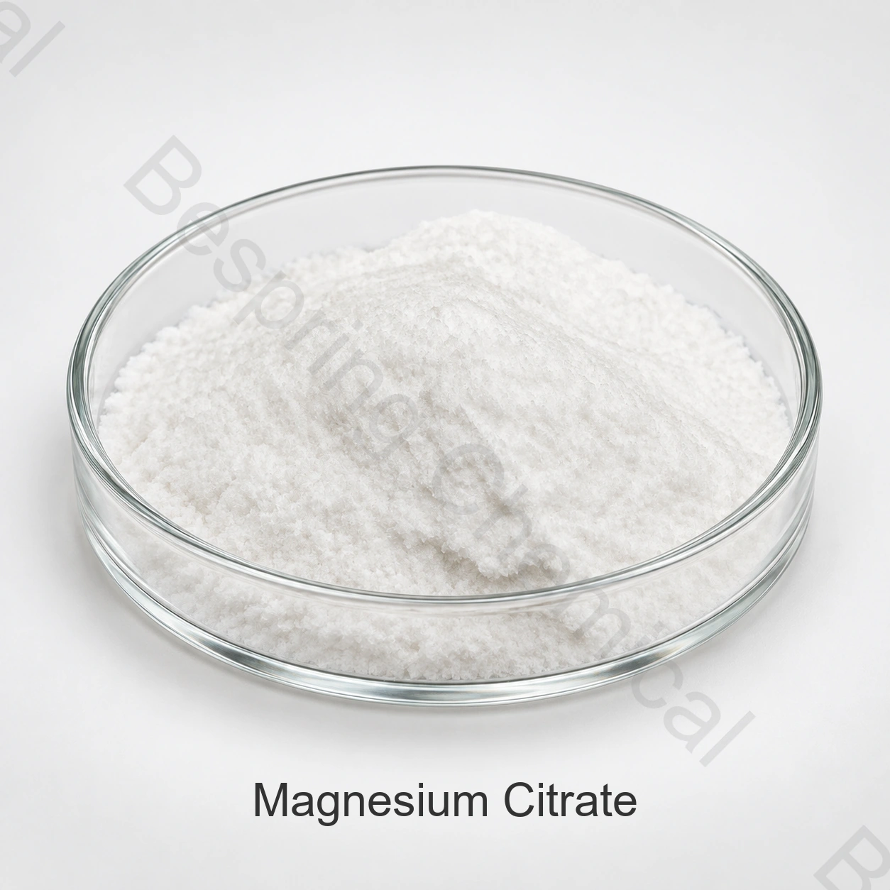

栄養補助食品
構成、適量および市場の条件を確認した後マグネシウムの源として使用される。
食品等級の原料・塩のクエン酸塩
マグネシウムのクエン酸塩はマグネシウムの源として適した食糧、補足およびプレミックスで使用されるクエン酸のマグネシウムの塩です。

製品イメージ・注文時にグレード・パッケージの確認
製品概要
参照の試金14.0–16.5%
標準的なパッキング25キロの袋
容器のローディング確認 / 20' FCL
資格についてCOAおよび要求の証明書
商業参照はCAS 144-23-0および方式Mgによってクエン酸塩マグネシウムを識別します3C12H10O14、乾燥した基礎の14.0–16.5%の参照のマグネシウム含有量の範囲を使って。
商用参照限度は、正確なグレード、意図した食品カテゴリ、および宛先市場規則に一致しなければなりません。 製品名だけは、規制適合を確立しません。
応募選考申込
法的使用、適量、技術的な性能および終えられたプロダクトの感覚的な影響を確かめて下さい。
構成、適量および市場の条件を確認した後マグネシウムの源として使用される。
食品の修飾におけるマグネシウムの貢献、味、互換性の評価。
容解性、沈殿物、酸性および感覚効果を評価して下さい。
マグネシウムベース、粒度、水和形、汚染物質を指定します。
フローを評価します, 圧縮と完成した投与量の形態の均一性.
食品以外の処方は、別々のグレードと適用資格を必要とします。このページでは、食品グレードの調達に関心を寄せています。
商用仕様
これらの商用参照制限は、COA結果とは別です。 注文する前に、グレード、分析基準、および適用基準に同意します。
スワイプするか、キーボードを使ってすべての列をご覧ください
| 試験項目 | 仕様書 |
|---|---|
| マグネシウムのクエン酸塩の内容、乾燥した基礎 | 14.0–16.5% |
| カルシウム | ≤1.0% |
| 硫酸钾 | ≤0.02% |
| Pb として重金属、 | ≤0.005% |
| アイロン | ≤0.05% |
| リード | ≤0.0001% |
| 塩化物 | ≤0.005% |
| 乾燥の損失 | ≤29.0% |
| アルセンティック | ≤0.0003% |
| 外観 | 白い粒状か結晶の粉 |
指定のノート: 商業マグネシウムのクエン酸塩は水和およびstoichiometryで変わるかもしれません。テーブルはマグネシウムのクエン酸塩の内容として14.0–16.5%の分野を分類しますが、概観はマグネシウムの内容を、示します。測定されたanalyte、化学アイデンティティ、水和の形態および乾燥基礎方法の受け入れの前に、損失乾燥方法および市場の条件と一致します。
資格サポート
現在の仕様/TDS、SDS、方法および代表的またはバッチCOAを要求して下さい。
製品および場所のための適当なHACCP、コーシャ、ハラールおよびISO文書を確かめて下さい。
レビュー NIH PubChemのマグネシウムのクエン酸塩の記録 アイデンティティの文脈のため。
貯蔵および処理
バイヤーの質問
マグネシウムのクエン酸塩はマグネシウムの源として適した食糧、補足およびプレミックスで使用されるクエン酸のマグネシウムの塩です。厳密な食糧のための法的な使用そして性能を検証して下さい。
商用参照は、乾燥ベースで14.0〜16.5%をリストします。 署名された仕様とCOAで、アッセイレポート要素マグネシウムまたはマグネシウムのクエン酸塩、方法とサンプルベースで、アッセイレポート要素マグネシウムかどうかを同意します。
袋ごとの25kgの参照のパッキングは500のkgです。
要求仕様/TDS、SDS、COAおよび適当な食品品質証明書。
用途、グレード、または水和フォーム、仕様、数量、目的地、納期を提供します。
仕様に基づく調達
アプリケーション、仕様、数量、梱包、宛先、必要書類を共有します。
あなたの等級および宛先市場を私達に知らせて下さい従って私達はあなたの順序のためにどの文書が利用できるか確認してもいいです。
外部参照は、バッチ証明書または Bespring 製品仕様ではありません。